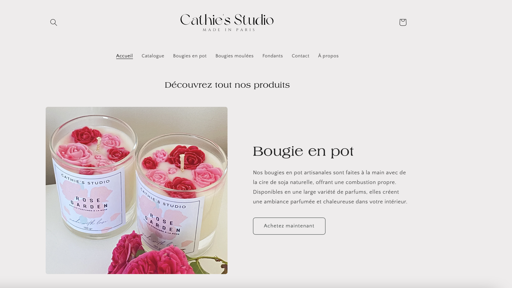

Accueil
À propos de moi
Je m'appelle Catherine Cali et je suis actuellement en deuxième année d'école d'ingénieur en informatique à Sup Galilée,
l’école d’ingénieur rattachée à l’université Sorbonne Paris Nord
Je suis également en apprentissage au sein du ministère des Armées en tant qu'ingénieure en données.
Mon cursus académique et professionnel m’a permis de maîtriser divers langages de programmation et outils analytiques,
que j'utilise pour résoudre des problématiques complexes et innovantes.
En dehors de mes activités professionnelles, j'ai un profond attachement à la nature. J'aime passer mon temps libre à faire de la randonnée,
découvrant de nouveaux paysages et me ressourçant en plein air.
Je suis toujours à la recherche de nouvelles opportunités pour apprendre et grandir, tant sur le plan professionnel que personnel.
Si vous êtes intéressé par mon profil ou souhaitez discuter de projets potentiels, n'hésitez pas à me contacter.
Education
Cours
- Mathématiques
- Algorithmique, complexité et optimisation
- Base de données
- Génie logiciel
- Programmation impérative, logique et orientée objet
- Algorithmique des graphes
- Logique
- Système d'exploitation
- Programmation Web
Classe préparatoire intégrée
Polytech Sorbonne - Sorbonne Université
Septembre 2020 - Juillet 2022
- Formation scientifique pluridisciplinaire et enseignements orientés métier d’ingénieur.
- Mathématiques, Informatique, Chimie, Mécanique, Physique, Electronique, Géosciences, Anglais
Formation d'ingénieur informatique
Sup Galilée - Université Sorbonne Paris-Nord
Septembre 2022 - Septembre 2026
- 1 an de classe préparatoire
- 3 ans de formation d'ingénieur informatique
Expérience professionnelle
Ingénieure des données
Ministère des Armées

01/10/2023 - Présent
- Définir et participer à la mise en œuvre des processus pour maîtriser le patrimoine applicatif du ministère des armées.
- Analyser des logiciels, exploiter des sources de données variées, et développer des scripts pour le traitement et l'analyse de données.
- Identifier et lier les données, et mettre en pratique les méthodes de traitement et d'échange définies.
Membre et Ressources humaines
Bureau des étudiants Sup Galilée

01/03/2023 - Présent
- Organisation et conduite des entretiens pour recruter de nouveaux membres du bureau des étudiants.
- Mise en place de formations et d'ateliers pour le développement des compétences des membres.
- Résolution des conflits et promotion d'un environnement de travail collaboratif et respectueux.
Auto-entrepreneuse
Cathie's Studio
01/08/2022 - Présent
- Gestion et préparation des commandes pour les clients.
- Alimentation et mise à jour du site web de l'entreprise.
- Gestion administrative, y compris la comptabilité et les relations avec les fournisseurs.
- Développement et mise en œuvre de stratégies de marketing pour promouvoir les produits.
Compétences
Développement
Les langages et technologies que j'utilise varient en fonction des projets sur lesquels je travaille. J'ai de l'expérience en développement front-end avec HTML, CSS et JavaScript, et je maîtrise également Java, C et Python.
Vous pouvez découvrir mes projets sur github.com/Catherine-Cali
Visualisation de Données
La visualisation de données permet de transformer les données brutes en informations exploitables. Avec Qlik Sense, je conçois des tableaux de bord interactifs et intuitifs.
Travail d'équipe
J'ai travaillé sur divers projets, informatiques et non techniques, en collaboration avec mes camarades. Ces expériences ont renforcé mes compétences en gestion de projets et en communication.
Sens de l'organisation
L'organisation est essentielle pour moi, que ce soit pour la gestion du temps ou des tâches. J'utilise Notion pour centraliser ces informations. Un espace de travail ordonné, "Clean space, clear mind", illustre bien mon état d'esprit.
Créativité
Je suis curieuse et créative, trouvant des solutions innovantes et explorant des idées nouvelles pour une approche collaborative.
Modélisation
Maîtrise des techniques UML pour concevoir des systèmes complexes et créer des diagrammes (cas d'utilisation, classes, séquences) pour faciliter la communication.
Projets
Veuillez consulter mon GitHub pour le code source et plus de projets.
Site Portfolio
Projet Personnel
HTML
CSS
JavaScript

- Conçu et développé un site web de portfolio personnel pour présenter mes projets et compétences.
- Implémenté un design responsive pour garantir une visualisation optimale sur tous les appareils.
- Utilisé JavaScript pour créer des fonctionnalités interactives et améliorer l'expérience utilisateur.
Petit train
Projet académique
HTML
CSS
JavaScript

- Développé un simulateur ferroviaire en deux dimensions permettant aux trains de se déplacer le long des rails sur un plateau.
- Implémenté des restrictions pour empêcher les trains de sortir du plateau ou d'aller sur des cases incompatibles.
- Permis aux utilisateurs d'ajouter des trains, de modifier le plateau en temps réel et d'observer le comportement des trains en mouvement.
Bataille Navale
Projet Académique
C
GTK

- Développement d'un jeu de bataille navale en C avec une interface graphique GTK, permettant de jouer contre une intelligence artificielle ou en mode multijoueur local.
- Le joueur place ses bateaux et tire sur la grille de l'IA, qui utilise des algorithmes pour cibler les bateaux efficacement.
- En mode multijoueur local, les bateaux sont placés aléatoirement pour éviter que l'adversaire ne voie les positions des bateaux.
Platforme E-commerce
Projet développement web
React
Node.js
MongoDB
- Développé une plateforme e-commerce complète en utilisant la stack MERN (MongoDB, Express, React, Node.js).
- Mis en place l'authentification des utilisateurs, la gestion des produits, et les fonctionnalités avancées du panier d'achat.
- Intégré un système de paiement sécurisé en utilisant l'API Stripe.